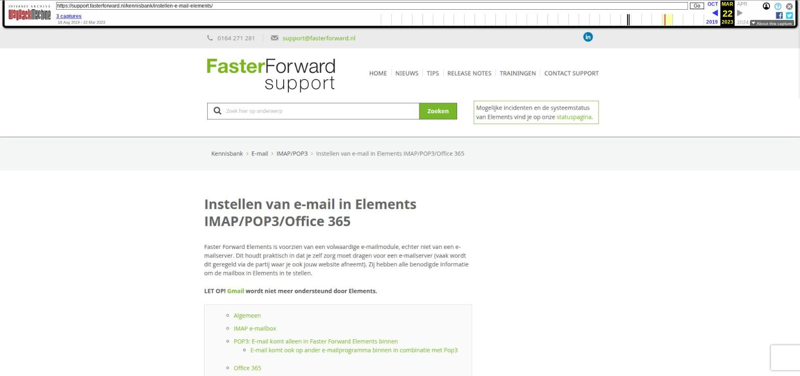

Instellen van e-mail in Elements IMAP/POP3/Office 365

Tekstinhoud
Instellen van e-mail in Elements IMAP/POP3/Office 365
Faster Forward Elements is voorzien van een volwaardige e-mailmodule, echter niet van een e-mailserver. Dit houdt praktisch in dat je zelf zorg moet dragen voor een e-mailserver (vaak wordt dit geregeld via de partij waar je ook jouw website afneemt). Zij hebben alle benodigde informatie om de mailbox in Elements in te stellen.
LET OP! Gmail wordt niet meer ondersteund door Elements.
Algemeen
IMAP e-mailbox
POP3: E-mail komt alleen in Faster Forward Elements binnen
E-mail komt ook op ander e-mailprogramma binnen in combinatie met Pop3
Office 365
E-mailbox aanmaken
Algemeen
Om de e-mail in Elements te laten functioneren, heb je een e-mailadres nodig wat ingelezen mag worden. Hiervoor zijn drie manieren die hierna beschreven worden. Afhankelijk van de gekozen manier zal de e-mail op een bepaalde wijze in Elements binnen komen. Standaard wordt de e-mail box eens per 5 minuten leeggehaald (dus je ontvangt jouw e-mail met maximaal 5 minuten vertraging). Je kunt ook gebruiken maken van de "direct ophalen" knop in de e-mailmodule.
IMAP e-mailbox
Met IMAP is een gedeeltelijke e-mailsynchronisatie mogelijk tussen jouw mailbox in Elements en de e-mailserver, en/of op jouw telefoon.
Meer informatie over het instellen van jouw e-mail op jouw mobiele telefoon lees je op de volgende supportpagina.
Om jouw IMAP synchronisatie in te stellen, hebben wij de volgende gegevens nodig:
Servernaam
Poort
Gebruikersnaam van de mailbox
Naam van de map voor verzonden berichten, bijvoorbeeld 'Sent items'
Naam van de map voor SPAM berichten, bijvoorbeeld 'SPAM'
Let op: om het werkend te krijgen moet ook het bijbehorend wachtwoord ingevuld zijn. Dit wachtwoord dien je zelf in te vullen in de e-mailmanager, nadat het e-mailadres is aangemaakt.
POP3: E-mail komt alleen in Faster Forward Elements binnen
Als de e-mail alleen in Elements ingelezen hoeft te worden, dan volstaat het om de gegevens van de mailbox door te geven via support@fasterforward.nl.
Wij hebben daarvoor drie gegevens nodig:
Servernaam
Gebruikersnaam van de mailbox
Let op: om het werkend te krijgen moet ook het bijbehorend wachtwoord ingevuld zijn. Dit wachtwoord dien je zelf in te vullen in de e-mailmanager, nadat het e-mailadres is aangemaakt.
E-mail komt ook op ander e-mailprogramma binnen in combinatie met Pop3
Wanneer je gebruik maakt van Pop3 en wilt e-mailen vanuit zowel Elements als de e-mailserver dan is er de volgende optie.
Er wordt dan gebruik gemaakt van een zogenaamde schaduwaccount. Dit is een e-mailadres waarnaar alle e-mails die binnenkomen op jouw oorspronkelijke e-mailadres worden gestuurd. Alle e-mail die binnenkomt, zal in beide e-mailboxen binnen komen. Dit is iets wat jouw e-mailbeheerder voor je moet doen. De schaduwe-mailbox moet worden ingesteld in Elements, zodat Elements hiervan de e-mail kan ophalen. Tussen de beide mailboxen bestaat geen communicatie, dus e-mail die wordt gelezen in Elements wordt niet als zodanig getoond op de e-mailserver en vice versa.
Voorbeeld:
Origineel: jan.de.boer@jouworganisatie.nl
Schaduw: jan.de.boer2@jouworganisatie.nl
Voor het inrichten zijn de drie gegevens zoals bovenstaand benodigd. De gebruikersnaam zal dan het schaduwadres zijn.
Office 365
Loopt jouw e-mail via Office 365/Outlook dan wordt er gebruik gemaakt van het API protocol. De e-mailboxen moeten voor gebruik eerst geauthenticeerd worden. Hier lees je meer over het aanmaken van een e-mailbox via het API protocol. Let op: het kan zijn dat bestaande e-mailadressen in Elements nog ingericht zijn met type IMAP of Pop3. Deze moeten omgezet worden naar het type Office 365 (API protocol). Dit moet door ons gedaan worden. Voor dit verzoek kan je een e-mail sturen naar support.
Op de exchange is er ook een protocol 'mapi', deze heeft ook de agenda en personenbeheer. Hier kan Elements niet mee koppelen.
E-mailbox aanmaken
Het is mogelijk deze mailboxen zelf aan te maken en te beheren, dit gaat via de e-mailmanager. Hiervoor heb je de juiste rechten nodig. Indien gewenst kunnen wij ook de e-mailbox voor jullie aanmaken, stuur dan een e-mail naar support@fasterforward.nl.
Laatste update: 20 januari 2023
Tagged: e-mail instellen, e-mailbox, mail, mail instellen, mailbox
Was deze informatie nuttig?
Ja Nee